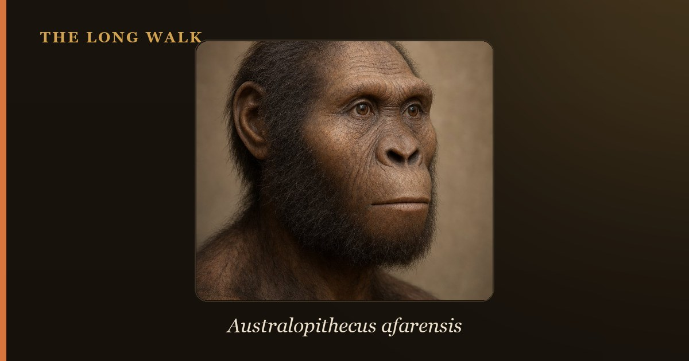

Australopithecus anamensis (4.2–3.8 Ma) and A. afarensis (3.9–2.9 Ma) represent two pivotal chapters in early hominin evolution. Once thought a simple ancestor–descendant pair, the 2019 MRD skull fossil suggests they may have overlapped in time and existed as distinct species. Both walked upright but retained ape-like traits, marking the dawn of bipedalism before brain expansion began in earnest.

The two species that best encapsulate the earliest stages of the hominin family tree are Australopithecus anamensis and Australopithecus afarensis—separated by roughly a million years yet linked by a mystery that has captivated paleoanthropologists for decades. Which came first? Did one transform into the other? Or did they coexist as distinct branches of our family? The answers reveal how evolution works at the deepest roots of humanity.
These early australopithecines walk a crucial boundary in human evolution. They lived in Africa when the climate was shifting, when forests were retreating into savanna, and when upright walking offered a new survival strategy. Yet their brains remained small, their faces primitive, and their links to the trees still tangible. To understand them is to witness the first decisive steps toward becoming human—a process slower, messier, and more branched than the old textbooks suggested.
| At a glance | Australopithecus anamensis | Australopithecus afarensis |
|---|---|---|
| Age | ~4.2–3.8 million years ago | ~3.9–2.9 million years ago |
| Key sites | Kanapoi and Allia Bay (Kenya); Woranso-Mille (Ethiopia) | Hadar (Ethiopia); Laetoli (Tanzania); Dikika (Ethiopia) |
| Signature fossil | MRD cranium (~3.8 Ma); tibia; jaw and teeth | Lucy (AL 288-1, ~3.2 Ma); Laetoli footprints (~3.66 Ma) |
| Brain size | ~350–400 cc (estimated from MRD) | ~380–430 cc |
| Face shape | More projecting, more ape-like; larger canines | Flatter face; smaller canines; more derived jaw |
| Bipedalism | Confirmed bipedal; tibia shows full upright gait | Fully bipedal; Laetoli footprints show striding gait |
| Relationship to us | Likely ancestor of A. afarensis, or coexisting sister species | Probable ancestor of Homo and later australopithecines |
The dawn of Australopithecus: Meeting anamensis
Australopithecus anamensis holds a singular place in our evolutionary timeline—it is the earliest known australopithecine, the first member of the genus that would eventually produce all later hominins, including us. The name itself, coined in 1995, means "southern ape of the lake" in the Turkana language, a reference to the ancient Lake Turkana in Kenya where the first specimens were found. For over two decades, anamensis was a shadowy figure in our story, known mainly from fragmented jaws, isolated teeth, and a single shin bone (tibia) that screamed a single message: I walked upright.
Then, in 2019, everything changed. Paleoanthropologist Yohannes Haile-Selassie and an international team announced the discovery of MRD—a remarkably intact cranium found in the Woranso-Mille region of Ethiopia, dated to approximately 3.8 million years ago. For the first time, anamensis had a face. And that face was startling: a small brain case, a projecting snout with a powerful jaw, and large canine teeth that looked more ape than human. In every feature, anamensis appeared ancient, primitive, and still deeply anchored to our ape heritage.
Who was Australopithecus anamensis? The MRD skull rewrites the story
The MRD cranium (the scientific designation for "Miro Road") stands as one of the most important hominin fossils discovered in the past decade, not because it is uniquely human, but precisely because it is not. With a brain capacity of roughly 360 cubic centimeters—barely larger than a modern chimpanzee's—and a face that projects forward with an ape-like prominence, MRD shows us what an australopithecine looked like before it became more human-like. The canine teeth are larger and more pointed than in later species, the jaw is robust and powerful, and the overall cranial architecture retains many primitive traits.
Yet the postcranial skeleton—the bones below the neck—tells a strikingly different story. The tibia recovered alongside earlier anamensis specimens shows unmistakable signs of bipedalism: a reinforced shaft, an angled ankle joint, and weight-bearing architecture that could only have come from an animal that walked on two legs as its primary mode of locomotion. This is the paradox that defines early australopithecines: a brain still ape-like, a face still ape-like, but a posture and gait fully transformed into upright walking. Anamensis shows us evolution's strange timing—the skeleton modernized while the head lingered in the past.
Who was Australopithecus afarensis? Lucy and beyond
If anamensis is the hidden dawn of the australopithecines, then Australopithecus afarensis is the first australopithecine to become a household name. In 1974, paleoanthropologist Donald Johanson discovered "Lucy"—a 3.2-million-year-old female skeleton from Hadar in Ethiopia, officially designated AL 288-1. Lucy captured the world's imagination: she was a celebrity fossil, a small-brained, ape-jawed creature that nevertheless walked through the African landscape on two legs. She became the poster child for upright walking and the bridge between apes and humans that millions of people learned about in textbooks.
Yet Lucy, for all her fame, is not the eldest afarensis. The species ranged across Ethiopia, Kenya, and Tanzania from roughly 3.9 to 2.9 million years ago. At Hadar, a much younger child skeleton—the "Dikika child"—provides evidence that afarensis cared for its young over extended periods, a deeply human trait. More dramatically, at Laetoli in Tanzania, volcanic ash preserved footprints made 3.66 million years ago by afarensis individuals walking across a landscape. The prints show a striding, upright gait, with a heel strike and toe-off, almost identical to a modern human's walk. Afarensis was committed to bipedalism—perhaps more so than anamensis—even as its brain remained small (averaging 380–430 cubic centimeters) and its face still bore an ape-like structure.
Sexual dimorphism in afarensis
One of the defining characteristics of A. afarensis is marked sexual dimorphism—a dramatic difference in size and build between males and females. Lucy herself was small, roughly 3.5 feet tall, but fossils assigned to afarensis vary greatly. Some individuals appear to have been significantly larger, likely males. This pattern mirrors the extreme sexual dimorphism seen in gorillas, where males can be twice the size of females. It suggests that afarensis males may have competed intensely for mates, possibly forming hierarchical social groups—a hint at social organization that would become far more complex in later hominins.
Straight line or branching cousins? The MRD revolution
Before 2019, the conventional wisdom was reassuringly simple: Australopithecus anamensis gradually evolved into Australopithecus afarensis in a process called anagenesis—one species transforming into another over time, a single unbroken lineage. This tidy narrative fit the available fossils. Anamensis, being older, could serve as the ancestor; afarensis, being younger and slightly more derived, could be the descendant. The story was a straight line climbing from ape toward human.
The MRD skull complicated everything. If anamensis lived 3.8 million years ago in Ethiopia, and if early afarensis fossils (like the Belohdelie frontal bone) date to 3.9 million years ago, then the two species appear to have overlapped in time. They did not exist in a strict sequence but, at least briefly, in the same era. This raises a troubling question for the linear model: if anamensis was transforming into afarensis, how could both exist simultaneously? The answer that many paleoanthropologists now favor is that anamensis and early afarensis were not ancestor and descendant but sister species—separate lineages that branched from a common ancestor, coexisted for perhaps a few hundred thousand years, and then diverged in their evolutionary paths.
If this branching model is correct, it means the story of early hominins is not a simple ladder but a bush—a complex pattern of speciation, competition, and selection playing out across the African landscape. Multiple australopithecine species may have lived side by side, each adapted to different environments or ecological niches, each competing or coexisting in ways we are only beginning to understand.
Key anatomical differences: Reading the bones
Despite their close relationship in time and probable descent from a common ancestor, A. anamensis and A. afarensis show subtle but real anatomical differences that paleontologists use to distinguish them. Anamensis retains more primitive features: its canine teeth are larger and more ape-like, its face more projecting, and its jaw more robust. The overall cranial proportions are more primitive, with a larger face relative to the braincase.
Afarensis, by contrast, shows a trend toward increased facial flatness, smaller canines, and a more refined jaw articulation. The face, while still ape-like by modern human standards, is less dramatically projected. These changes suggest that afarensis underwent subtle selective pressures that favored a slightly more derived anatomy. Whether these changes accumulated as anamensis transformed into afarensis, or whether they accumulated separately in afarensis as it diverged from a common ancestor, remains an open question in paleoanthropology.
Both species, however, share the most revolutionary trait: committed bipedalism. Neither species is a knuckle-walker, as great apes are. Both possessed the skeletal hallmarks of upright walking—angled knees, shortened arms relative to legs, and a reoriented pelvis. In this sense, they represent a fundamentally new way of being a primate, a radical departure from the ape template that must have conferred significant survival advantages under the increasingly dry, open conditions of Miocene Africa.
Why it matters: Reading our deepest origins
The debate over whether anamensis and afarensis represent a straight line or branching species matters because it shapes our understanding of how evolution works at the very foundation of our lineage. If the linear model is correct, evolution proceeded as a steady transformation—one species gradually replacing another—a process called phyletic evolution. This model suggests a degree of directedness, as if evolution knew where it was going. If the branching model is correct, early hominin evolution was messier: multiple species coexisting, competing, experimenting with different anatomical strategies. This model is more consistent with how evolution actually works—contingent, branching, shaped by local environments and random events.
Moreover, these early australopithecines sit at the threshold of a profound transition. Roughly a million years after afarensis disappears from the fossil record, the genus Homo appears, with a dramatically larger brain and new stone tools. Understanding how anamensis and afarensis set the stage for that emergence—which traits they carried forward, which innovations Homo added—requires us to read their skeletons carefully and to trace the branching pathways that led from them to us. The question is not merely historical; it is a window into how human nature itself emerged from the African landscape.
The discovery of MRD, and the new questions it raised, exemplifies how paleontology progresses. Each fossil does not simply fill in a gap; it often complicates our understanding, pushing us to revise our assumptions and to see the past as richer, stranger, and more dynamic than we previously imagined. Earlier hominins like Ardipithecus show us the ape-like roots of our lineage, while afarensis demonstrates the full commitment to bipedalism. Anamensis, with its mix of primitive and advanced traits, occupies a fascinating intermediate position. To understand anamensis and afarensis is to witness the opening chapters of the human story—a story written not in words but in bone, in stone, and in the patient work of scientists reading the deep past.
See how anamensis and Lucy's species sit on the interactive deep-time tree of early hominins.
Explore the family tree →Frequently asked questions
What is the difference between Australopithecus anamensis and afarensis?
Australopithecus anamensis (4.2–3.8 Ma) and A. afarensis (3.9–2.9 Ma) represent two pivotal chapters in early hominin evolution. Once thought a simple ancestor–descendant pair, the 2019 MRD skull fossil suggests they may have overlapped in time and existed as distinct species.
- Haile-Selassie, Y. et al. (2019). 'A 3.8-million-year-old hominin cranium from Woranso-Mille, Ethiopia.' Nature 573. nature.com
- Smithsonian Human Origins — Australopithecus anamensis. humanorigins.si.edu
- Smithsonian Human Origins — Australopithecus afarensis. humanorigins.si.edu